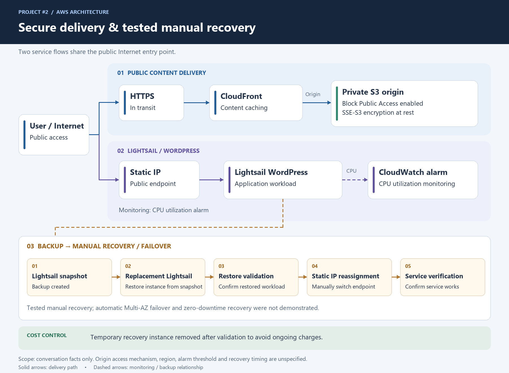
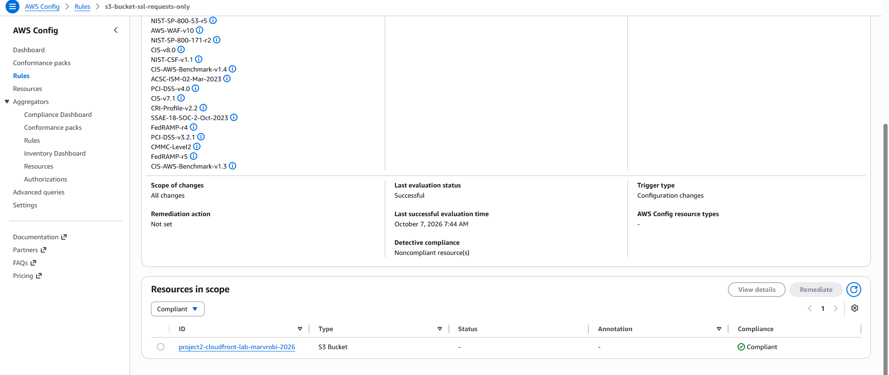
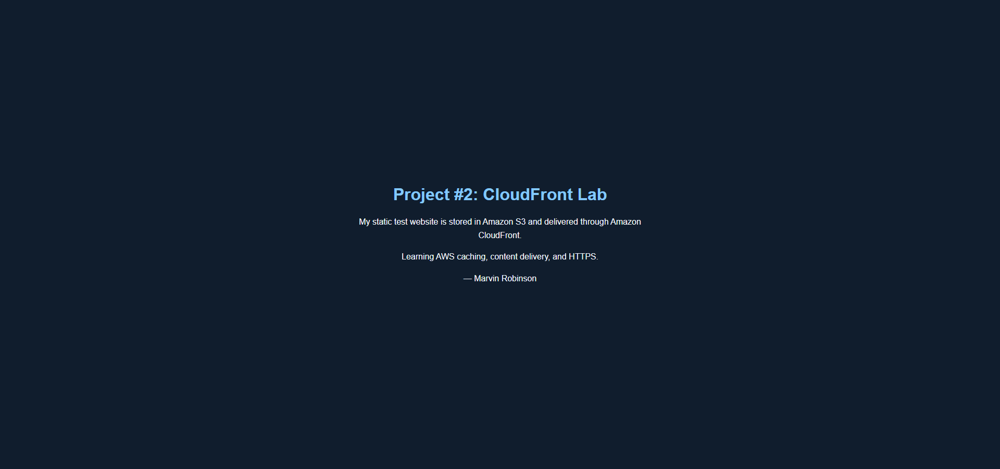

Result and scope
WordPress was restored from a snapshot to a replacement Lightsail instance, and availability was verified after manually moving the original Static IP. A separate private S3 + CloudFront delivery path was validated with HTTPS, an HTTP-to-HTTPS redirect, and a confirmed cache hit.
This learning lab demonstrates manual recovery. Automatic Multi-AZ failover, continuous replication, and zero-downtime recovery were not demonstrated. It is portfolio evidence of hands-on lab work, not production client experience.
Problem and architecture decisions
The objective was to explore a small-business WordPress hosting scenario with a stable endpoint, basic monitoring, and a practical recovery process. Lightsail provided a simplified, bundled hosting model; the lab instance used 1 GB RAM, 2 vCPUs, and 40 GB SSD. A Static IP kept the public endpoint consistent when switching instances.
WordPress workload
Internet → Static IP → Lightsail WordPress. CPU monitoring and a baseline snapshot supported operations and recovery testing.
Separate content delivery lab
Browser → CloudFront over HTTPS → private S3 origin. This was a separate static-content path, not evidence that CloudFront fronted the WordPress application.

Implementation and validation
| Area | Completed work and evidence |
|---|---|
| Deployment | Deployed and verified WordPress on aws-wordpress-lab; attached a Static IP and reviewed Lightsail firewall/network access. |
| Monitoring | Configured and reviewed a CloudWatch CPU utilization alarm at ≥80%, for two occurrences within 20 minutes. The documentation confirms configuration and review, not a tested notification or automated remediation. |
| Recovery | Created aws-wordpress-lab-baseline, restored it to aws-wordpress-lab-recovery, verified the restored workload, moved the original Static IP, and verified WordPress through the same endpoint. |
| Private origin | Used a dedicated private S3 bucket with Block Public Access and private origin access for CloudFront. SSE-S3 encryption at rest was documented. |
| HTTPS and caching | Configured index.html as CloudFront's default root object. Validated HTTPS delivery, HTTP→HTTPS redirect, and X-Cache: Hit from cloudfront. |
| Networking review | Inspected VPC, subnets, route table, Internet Gateway, Security Groups, and Network ACLs read-only. Reviewed public/private subnet and NAT concepts; this was not a new custom VPC deployment. |
| Cleanup | Returned the Static IP to the original instance and deleted the temporary recovery instance after validation; retained the baseline snapshot. |
Security follow-up · October 7, 2026
Security improvement: enforcing HTTPS access to S3
AWS Config detected that the Project #2 S3 origin bucket was noncompliant with s3-bucket-ssl-requests-only. I preserved the existing CloudFront read-access statement and added DenyInsecureTransport, explicitly denying all S3 actions on the bucket and its objects when aws:SecureTransport is false. After saving the policy, AWS Config reported the bucket as Compliant, and I confirmed that the website remained accessible through CloudFront.


Tested manual recovery workflow
- Create a baseline snapshot of the WordPress instance.
- Restore the snapshot to a replacement Lightsail instance.
- Verify the restored WordPress workload.
- Manually reassign the original Static IP to the replacement.
- Verify WordPress availability through the same public endpoint.
- For lab cleanup, return the Static IP to the original instance and delete the temporary replacement.
Lesson: A snapshot supplies a recovery source; the restore test proves that the workload can run again. Reassigning the Static IP preserves the endpoint, but the workflow still requires an operator and may involve downtime.
Recovery planning: targets, not measured guarantees
Documented a proposed 24-hour RPO (acceptable data-loss window) and 4-hour RTO (target time to restore service), with at-least-daily backups, 14-day retention, and validation of the WordPress database and uploaded files.
These are planning targets. The lab does not establish measured recovery times, production guarantees, or an implemented daily backup schedule and retention policy.
Security, performance, and cost lessons
- Private content delivery: Block Public Access and private-origin access restrict direct public S3 exposure while CloudFront delivers content.
- Encryption: SSE-S3 covers S3-managed encryption at rest. SSE-KMS key control, permissions, and auditability were studied; a deployed or tested SSE-KMS workflow is not claimed.
- HTTPS and caching: HTTPS protects the validated content-delivery path in transit. A real CloudFront cache hit supplied concrete caching evidence; performance benchmarking was not recorded.
- Monitoring: A CPU alarm provides an operational signal. It does not itself restore a failed application or establish complete application-health coverage.
- Cost awareness: Removing the temporary recovery instance avoided unnecessary ongoing instance charges. Budgets and Cost Explorer concepts were reviewed; quantified savings and deployed budget alerts are not claimed.
- Resilience: The tested snapshot path improves recoverability, while a single running WordPress instance remains a point of failure.
Business value and production considerations
This lab illustrates how a small website could gain a stable endpoint, basic monitoring, and a documented recovery process. It strengthened my ability to explain hosting and recovery tradeoffs in plain language.
A production design would need requirements and further implementation and testing for backup automation, recovery timing, application-health monitoring, access controls, patching, and any required high availability. Automatic Multi-AZ failover and zero-downtime recovery remain outside this project's demonstrated scope.
Skills demonstrated
- Deployed and validated WordPress on AWS Lightsail with a Static IP and CPU monitoring.
- Tested snapshot-based manual recovery by restoring a replacement instance, reassigning the endpoint, and verifying application availability.
- Validated a private S3 + CloudFront delivery path with HTTPS, HTTP-to-HTTPS redirect, and cache-hit evidence.
- Documented architecture, recovery targets, security decisions, cost lessons, and the boundaries of the lab.
Evidence basis: completed Project #2 portfolio documentation and dated validation entries in the AWS 90-Day Planner in Notion. Configuration and test results above are recorded lab evidence; this page does not assert that lab endpoints are currently live.